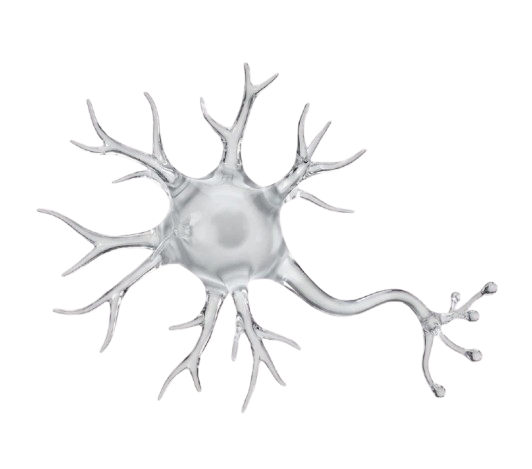

Welcome, Patient
Age -- · Diagnosed in -- · Schedule: --
Log Motor Symptoms
Select intensity from 1 (Mild) to 5 (Severe)Recent Symptom History
0 logsNo symptom logs recorded yet.

Biometric signals
start here
Neurological
telemonitoring
Age -- · Diagnosed in -- · Schedule: --
No symptom logs recorded yet.
Review clinical profiles, daily motor symptom logs, BITalino sessions, and attach record-specific medical observations.
ID -- · Age -- · Diagnosed -- · Regimen: --
No symptom logs submitted by this patient.
No BITalino telemetry sessions recorded yet.
Attaching medical note to Record